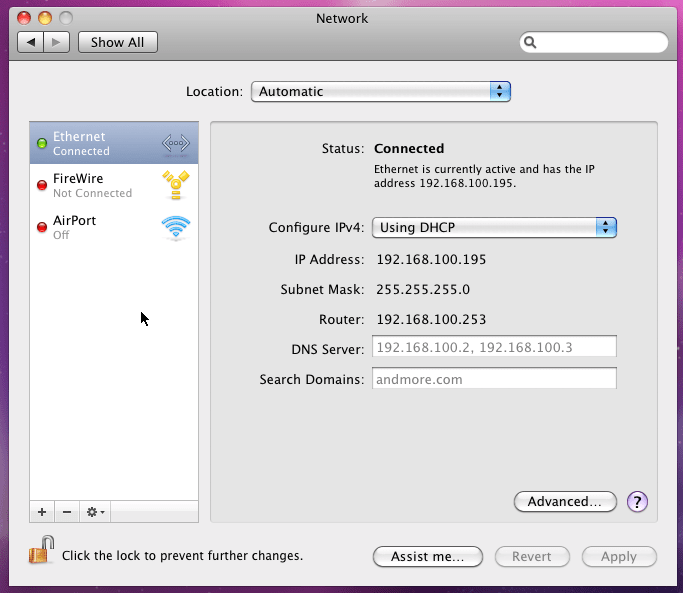
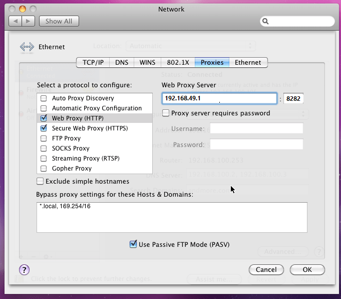

连接Mac /OS X
打开系统偏好>网络，你会看到下面的界面

在左侧，选择 "AirPort"
点击"高级..."然后点击 "代理" 标题
点击选项框并选择"Web Proxy (HTTP)" 并输入 "192.168.49.1"和"8282".
对于"Secure Web Proxy (HTTPS)"完成相同的设置

点击"OK"来保存并关闭代理设置，然后点击"Apply"来应用和关闭网络偏好